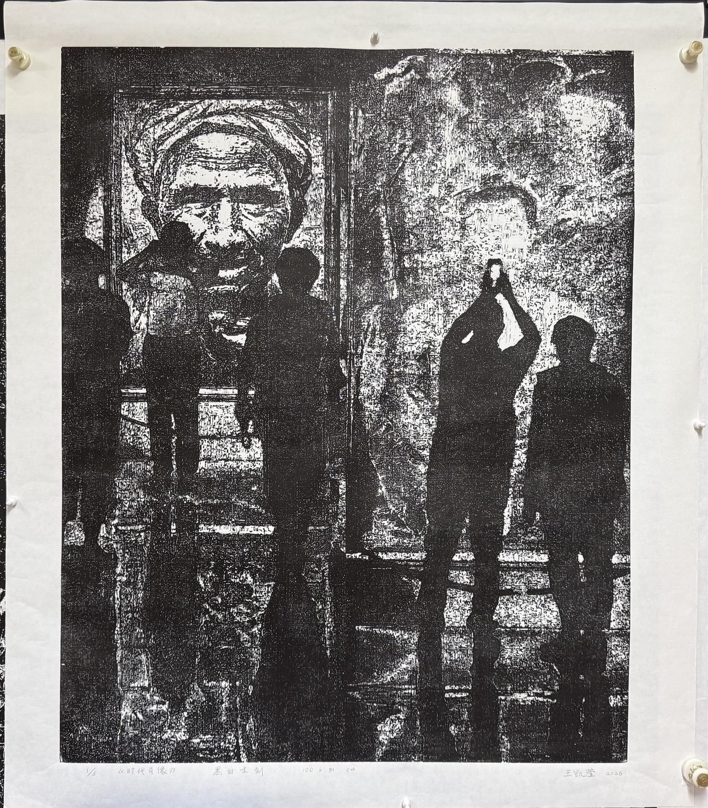

KAIXUAN WANG ·
王凯萱作品集
Portrait of an Era
时代肖像

Artwork ID /
作品编号
KW-P-000003-E01
Year /
年份
2026
Medium /
媒介
Hand-cut woodcut print /
手工木刻版画
Dimensions /
尺寸
100 × 80 cm (H × W /
高 × 宽
)
Edition /
版次
1/5